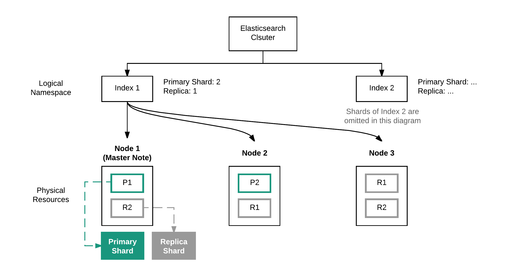
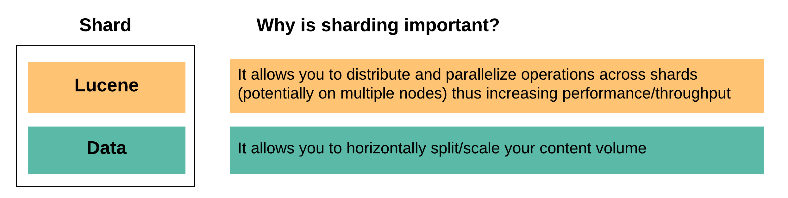
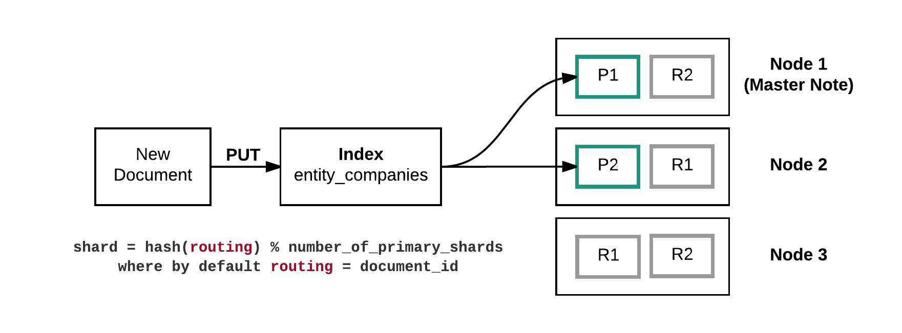
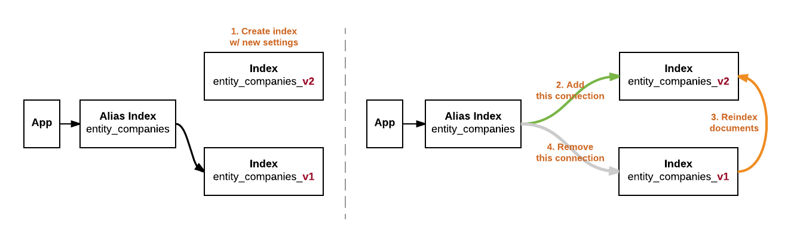

class: center, middle

# {{page.title}}

Jiaming (Jason) Zhang

{{page.date | date_to_string }}

---
{% raw %}
# Recap


---
# Recap

Launch Elasticsearch (ES) and [Kibana](https://www.elastic.co/products/kibana) (a visualization tool for ES) locally

```sh
brew install elasticsearch

# Automatically start Elasticsearch when log in
# By default, Elasticsearch will be available at http://localhost:9200
brew services start elasticsearch

###################################

brew install kibana

# Automatically start Kibana when log in
# By default, Kibana will be available at http://localhost:5601
brew services start kibana

###################################

# Verify whether both service is started
brew services list | grep -E "elasticsearch|kibana"
```

---
layout:true


# Elasticsearch Internal - Shards

---



???

1. Explain the relation between index, shard and node
2. Explain the type of shards
3. Explain the two shard-related settings - # of primary shards and # of replica

---

A Elasticsearch cluster has 2 indices. Here is the setting for one of them:

```javascript
# Index: entity_companies
{
    "number_of_primary_shards": 3,
    "number_of_replicas": 2
}
```

.question[How many shards does the cluster has? ]
--
.answer[It also depends on the other index.]
--


.question[How many shards does this index has? ]
--
.answer[It also depends on # of nodes the cluster has.]

--


.question[How many shards does this index expects to has? ]
--
.answer[**9 shards** = 3 primary shards * (1 origin + 2 replicas) ]

---

Each shard is in itself a **fully-functional** and **independent** "index" that can be hosted on any node in the cluster.



--

Thus, **# of primary shards** effectively determines how many data an index can hold.

.footnote[
[Elasticsearch Reference - Basic Concepts](
    https://www.elastic.co/guide/en/elasticsearch/reference/current/_basic_concepts.html)
]

???

Benefit of each shard having its own Lucene engine:
- Minimize data movement
- Distribute the operations

---

.question[What factors determine how many data an index can store?]

--

.answer[
Here are the factors that determine how many data an index can store:
- **\# of primary shards**
    - Max # of documents a shard can have is bounded by
    max # of documents a Lucene index can have (around 2 billions). [1]
- **Hardware** (e.g. # of nodes, disk space, CPU)
- **Document size**
- **Use case** (e.g. query, expected response time)
]

.footnote[
[\[1\] Elasticsearch Reference - Basic Concept](
    https://www.elastic.co/guide/en/elasticsearch/reference/current/_basic_concepts.html)
]

???

Examples
1. 100GB data, 2 nodes w/ 80GB disk space, 1 primary shard (bounded by # of primary shards)
2. 100GB data, 1 node w/ 80GB disk space, 3 primary shards (bounded by # of nodes)
3. 10GB data, 1 nodes w/ 100GB disk space and 20MB disk IO/sec, 3 primary shard, use case requires 40MB disk IO/sec

---

Create index **entity_companies** w/ default settings

```javascript
PUT entity_companies
```

--

Get index **entity_companies** metadata

```javascript
GET _cat/indices/entity_companies?v&h=health,index,pri,rep

health index            pri rep
yellow entity_companies   5   1
```

--

By default, an index has 5 primary shards and 1 replica.

---

Create index **entity_people** w/ specified settings

```javascript
PUT entity_people
{
    "settings" : {
        "index" : {
            "number_of_shards" : 3,
            "number_of_replicas" : 1
        }
    }
}
```

--

Update **number_of_replicas** after index **entity_people** is created

```javascript
PUT entity_people/_settings
{
    "index" : { "number_of_replicas" : 2 }
}
```

---

Update **number_of_shards** after index **entity_people** is created (THIS WILL FAIL)

```javascript
PUT entity_people/_settings
{
    "index" : { "number_of_shards" : 2 }
}
```

```txt
Response: 400
Reason: Can't update non dynamic settings [[index.number_of_shards]]
    for open indices [[entity_people/JGW2oY98RZeZJM8mFN5h_w]]
```

---

**Why doesn't Elasticsearch support changing # of primary shards on-the-fly?**

--

The answer is related to how Elasticsearch determines which shard a document should be saved in.



--

> ... if the number of primary shards ever changed in the future,
  all previous routing values would be invalid and documents would never be found.

.footnote[
[Elasticsearch Guide - Routing Value](
    https://www.elastic.co/guide/en/elasticsearch/guide/current/routing-value.html)
]

---

.question[What should I do if I really need to increase # of primary shards? ]
--
.answer[\- Reindexing all documents]

--

**Reindexing** is needed when we want to update certain immutable settings of the index,
like increasing # of primary shards or changing existed field mapping.

--

**Reindexing** simply means to
(1) cycle through all documents in the existed index and
(2) re-insert them to the new index with the desired new settings.
**Reindex** API was introduced to Elasticsearch in 2016.

--

```javascript
POST _reindex
{ "source": { "index": "entity_companies" },
  "dest": { "index": "entity_companies_v2" }}
```

--

**Reindex** API also supports
1. Selective Reindex Operation
2. Using Scripts with the Reindexing API
3. Reindexing for Mapping Changes

--

.footnote[
[Reindex Your Documents with Ease and without Third-Party Scripts using Elasticsearch](
    https://qbox.io/blog/reindex-documents-with-ease-without-third-party-scripts-using-elasticsearch)
]

???

Reindex API is better than third-party scripts because
1. No need to manage launching parallel workers
2. Data movement is minimized

---

Use **index alias** if you need to regularly reindex your documents



---

Let's put it together

--

**Step 1: Create index w/ new settings**

```javascript
PUT entity_companies_v2
{
    "settings" : {
        "index" : {
            "number_of_shards" : 3,
            "number_of_replicas" : 1
        }
    }
}
```

--

**Step 2: Connect alias to the new index**

```javascript
POST /_aliases
{
    "actions" : [
        { "add" : { "index" : "entity_companies_v2", "alias" : "entity_companies" } }
    ]
}
```

---

Let's put it together

**Step 3: Reindex all document from old index to the new one**

```javascript
POST _reindex
{
    "source": { "index": "entity_companies" },
    "dest": { "index": "entity_companies_v2" }
}
```

--

**Step 4: Remove alias's connection to the old index**

```javascript
POST /_aliases
{
    "actions" : [
        { "remove" : { "index" : "entity_companies_v2", "alias" : "entity_companies" } }
    ]
}
```


.footnote[
[Elasticsearch Reference - Indices Aliases](
    https://www.elastic.co/guide/en/elasticsearch/reference/current/indices-aliases.html)
]


---
layout:false

# Reading

If you find this topic interesting, here are a few extra readings:

- [Optimizing Elasticsearch: How Many Shards per Index?](
    https://qbox.io/blog/optimizing-elasticsearch-how-many-shards-per-index)
- Elasticsearch - The Definitive Guide (by ClintonGormley & Zachary Tong)
  - **Chapter 2 Life Inside a Cluster**:
    This chapter explains what Elasticsearch's internal looks like.
    **Shard** is the most important concept to understand Elasticsearch's internal.
    It also explains what happen when we add more nodes to the cluster or a cluster node fails.
  - **Chapter 4 Distributed Document Store**:
    This chapter explains how shards communicates w/ each other when a create/update/delete/query request is made
    as well as other topic related to Elasticsearch's distributed nature

{% endraw %}


